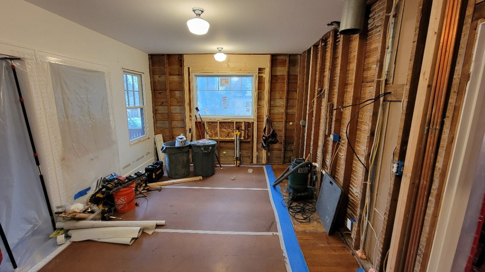
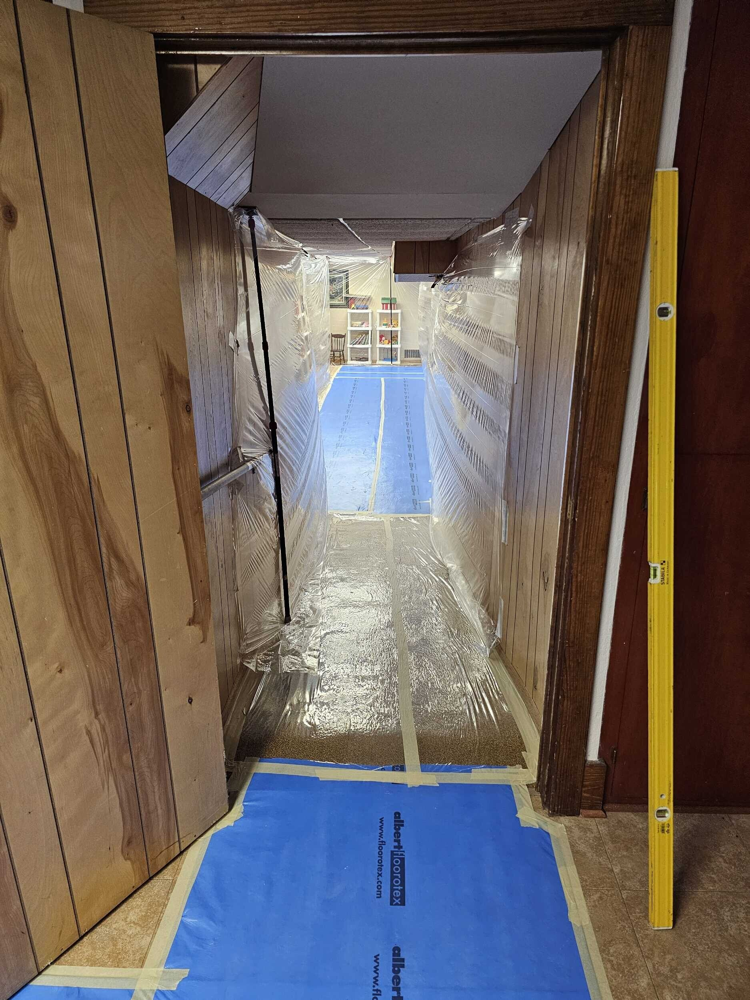
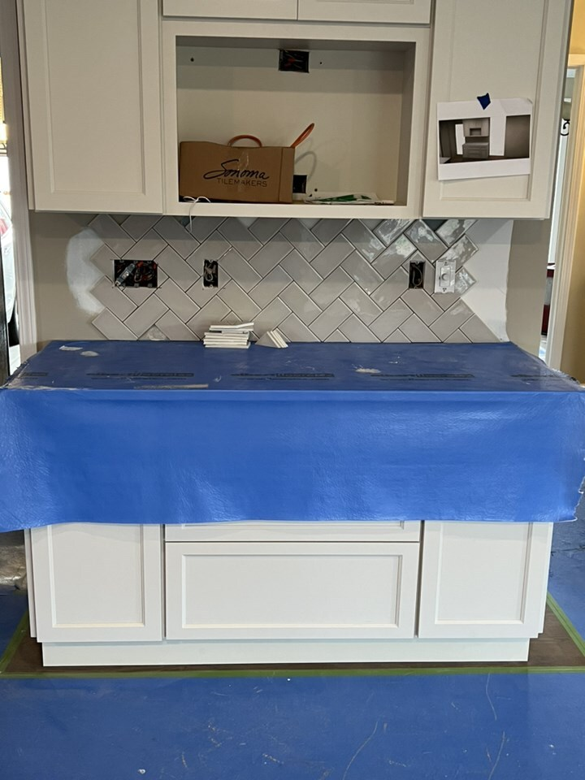
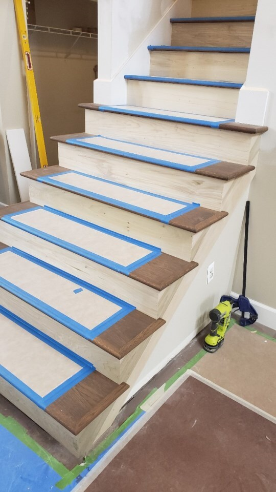
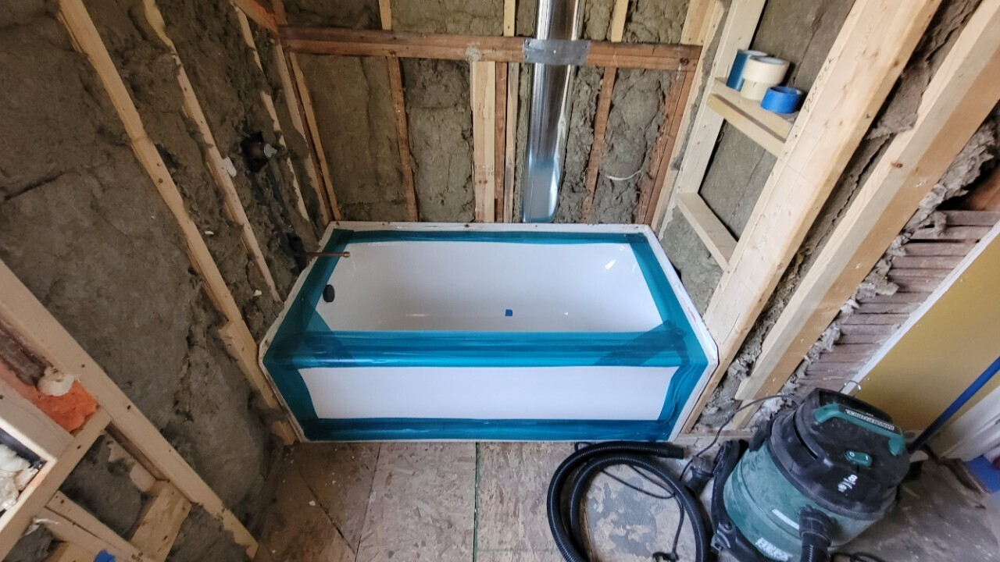
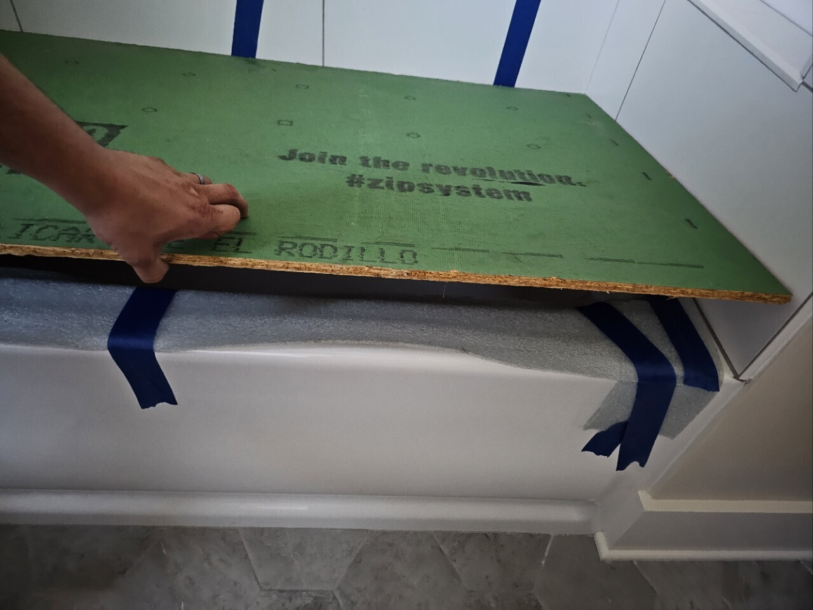
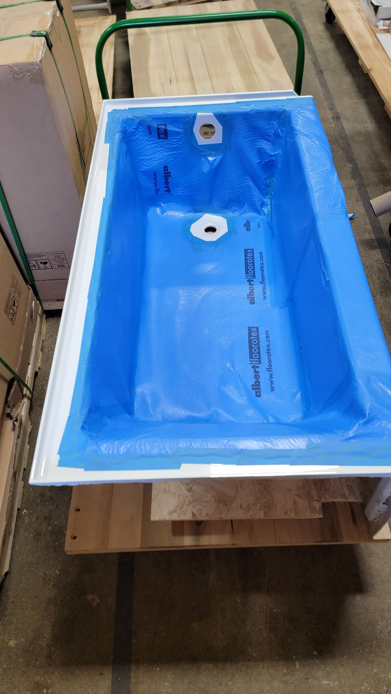
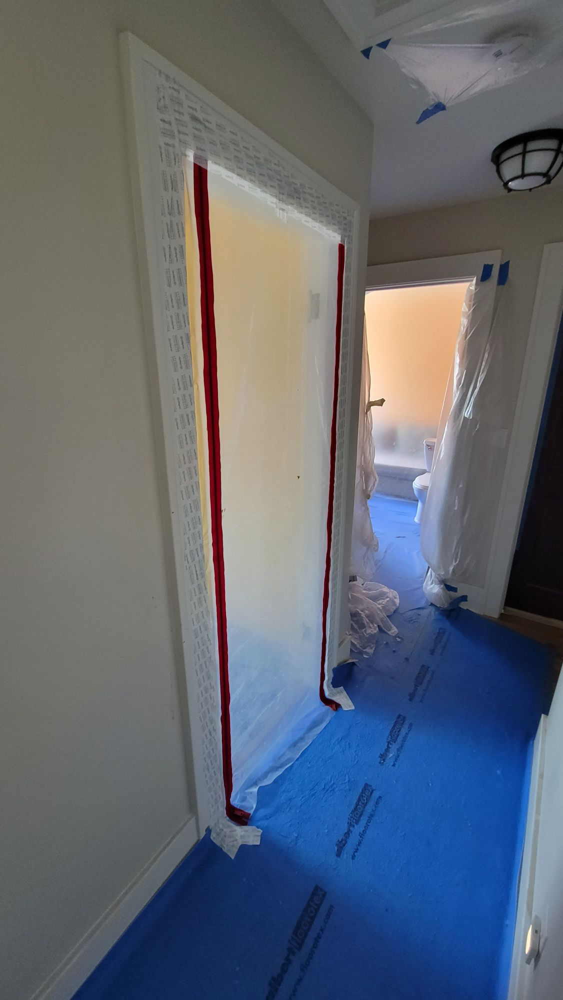

Jobsite Protection
Jobsite protection is one of the most important steps in any project. If done well it will pay for itself in saved time and effort every day that it stays in place. The contractor will handle most of the heavy lifting, but clients need to prepare their belongings and clear the work area to make work efficient which keeps the project on schedule, and to keep their belongings out of harms way.
Client Responsibilities
Move or secure your belongings before work begins. The contractor will protect surfaces and control dust, but fragile or delicate items should be stored by the client.
- Remove pictures from walls where they may be shaken or knocked
- Empty cabinets, fridges, and dishwashers in the work area
- Move furniture out of the work zone
- Remove rugs and floor coverings (the contractor will cover floors)
- Mark any items you want saved: fixtures, hardware, appliances, doors, trim, or other materials.
Note: Items can often be saved, but they're not always in reusable condition. Salvaging materials like trim or paneling takes more time than demolition and increases project cost. Consider the path to the work area—items behind dust walls may be inaccessible for days or weeks. Large items like pianos or workout equipment that must stay on site will be covered with plastic, but some dust migration is inevitable. Plan to clean these items after the project.
Builder Responsibilities
The contractor sets up containment to keep debris and dust from spreading throughout the home. Even with careful sealing, demolition work creates new pathways for mess to migrate. These methods protect both the work area and finished surfaces, but drywall dust for instance hangs in the air for hours and even the best prep will not keep it all confined to the work area..
Initial Setup
- Cover door thresholds with tacky tape (not blue tape, UV exposure will bake the adhesive on)
- Cover high traffic floors - including pathways in or out of the work area
- Tape field seams with white painters tape
- Tape edges with blue frog tape and write a date on the tape if you plan to replace at expiration
- Top with Masonite if there is a risk of impact
- Cover hard surfaces
- Drape furnishings with plastic, tape edges to seal completely when necessary
- Install dust walls - Consider using poly hanging tape or window tape for long term installations, they will damage the wall, but they stand a better chance of staying in place
- Install magnet or zipper doors - Magnet doors work better than zippers—nobody closes zipper doors. Install magnet doors plumb and tight at the top, with the bottom flaps just clearing the floor.
- Set up negative air using a floor fan with lay-flat ducting out a window (use an air scrubber on lead demo jobs instead)
- Cover drains so debris doesn't fall inside
- Seal nearby doors and ducts so dust doesn't migrate
During Work
- Cover newly installed materials immediately—the next trade should arrive to a protected surface
- Site protection is everyone's job. Maintain barriers throughout the project and leave extra materials on site so any crew member can protect newly installed work. For example, when flooring is installed, cover it immediately—either the installer does it (if they're your employee) or you cover it before the trim crew arrives.
Materials / Tools Needed
- Blue and white painters tape
- Tacky tape
- Painters plastic (light duty), 1 mil (standard), 3 mil (lead demo walls), 6 mil (lead demo floors)
- Zip poles
- Poly hanging tape
- Magnet or zipper doors
- Stapler
- Floor protection (Albert Floorotex, reinforced builders paper)
- Carpet shield (never apply this to wood floors or trim)
- Masonite
- Drop cloths
- More permanent fixtures, like temp walls and doors
- Fans for exhause or air scrubbers for lead demo jobs
- Lay flat duct









Resources
Last revised: 11/16/2025